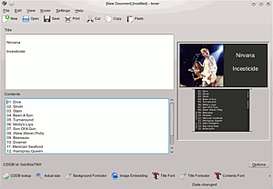

kover
Dieser Artikel wurde für die folgenden Ubuntu-Versionen getestet:
Ubuntu 14.04 Trusty Tahr
Zum Verständnis dieses Artikels sind folgende Seiten hilfreich:
Kover  ist eine leicht zu bedienende WYSIWYG-Anwendung zur Erstellung und zum Drucken von CD-Hüllen. Die Anwendung basiert auf KDE4 bzw. Qt 4. Kover verfügt unter anderem über die folgenden Funktionen:
ist eine leicht zu bedienende WYSIWYG-Anwendung zur Erstellung und zum Drucken von CD-Hüllen. Die Anwendung basiert auf KDE4 bzw. Qt 4. Kover verfügt unter anderem über die folgenden Funktionen:
Zugriff auf verschiedene Datenbanken zum Abruf von CD-Inhalten
Unterstützt Proxys mit Authentifizierung beim Datenbankzugriff
Liest CD-Text
Einlesen verschiedener Dateiformate anderer Anwendungen
Bilder auf Cover, Booklet und Inlet (Rückseite)
Installation¶
Zur Installation von Kover, benötigt man das Paket [1]:
kover (universe)
 mit apturl
mit apturl
Paketliste zum Kopieren:
sudo apt-get install kover
sudo aptitude install kover
Kover wird nicht automatisch einer Kategorie im K-Menü zugeordnet, daher ist es, nachdem man es installiert hat, unter "K-Menü -> Nicht zuzuordnen -> Kover" zu finden und zu starten [2]. Jedoch kann man den Menüeintrag im Nachhinein manuell ändern [3].
Übersicht¶
Kover ist zur Zeit nur auf Englisch verfügbar. Das Programmfenster ist in drei Bereiche unterteilt. Oben links, unterhalb der Werkzeugleiste, befindet sich das Textfeld "Title" zur Eingabe des CD-Titels. Darunter befindet sich das Feld "Contents", in das man die einzelnen Musiktitel eintragen kann. Rechts daneben befindet sich die Vorschau der gerade erstellten CD-Hülle. Durch  auf diesen Bereich wird die Vorschau in einem neuen Fenster vergrößert dargestellt. Am unteren Fensterrand befindet sich eine weitere Werkzeugleiste, die die wichtigsten Aktions- und Formatierungsschaltflächen enthält. Darüber, am rechten Rand, befindet sich die Schaltfläche "Options", die zu weiteren Formatierungsmöglichkeiten führt.
auf diesen Bereich wird die Vorschau in einem neuen Fenster vergrößert dargestellt. Am unteren Fensterrand befindet sich eine weitere Werkzeugleiste, die die wichtigsten Aktions- und Formatierungsschaltflächen enthält. Darüber, am rechten Rand, befindet sich die Schaltfläche "Options", die zu weiteren Formatierungsmöglichkeiten führt.
Benutzung¶
Verwendung einer CD-Datenbank¶
Möchte man nicht alle Musiktitel per Hand eingeben, kann man sich diese Daten über eine Audio-CD-Datenbank besorgen. Diese Datenbanken enthält eine Vielzahl von CD-Informationen, jedoch kann es auch vorkommen, dass zu einer CD keine Daten vorhanden sind. Hat man die CD zur Hand, für die man die Hülle erstellen möchte, legt man diese CD in das CD-ROM-Laufwerk ein und auf die Schaltfläche "CDDB lookup" in der unteren Werkzeugleiste oder wählt im Menü "Kover -> CDDB lookup". Aus den angezeigten Musikalben, sucht man das passende aus und die Titel erscheinen im entsprechenden Textfeld. Standardmäßig wird die Datenbank freedb verwendet. Die Serveradressen für andere Datenbanken, sind im Abschnitt Einstellungen hinterlegt.
Abfrage über Disc-ID¶
Hat man die CD, für die man die Hülle erstellen möchte, gerade nicht griffbereit, kann man manuell nach der zum Album gehörenden Disc-ID suchen. Hierzu geht man auf die Suchseite der CD-Datenbank, die man im Einstellungsdialog von Kover hinterlegt hat, und sucht nach der gewünschten CD. Bei den angezeigten Suchergebnissen, wählt man das passende Album, kopiert die Disc-ID und merkt sich die davor stehende Kategorie. Anschließend wählt man im Menü "Kover -> CDDB without CD" und trägt die Kategorie und die Disc-ID in das Dialogfenster ein. Nach auf "Search" werden die CD-Titel automatisch aus der Datenbank abgerufen.
CD-Text¶
Einige (wenige) Musik-CDs besitzen einen CD-Text, welcher Informationen zu Titel, Interpret und Namen der einzelnen Musikstücke enthält. Falls ein solcher CD-Text vorliegt, kann man diese Informationen über den Menüeintrag "Kover -> Read CD-TEXT" einlesen.
Daten aus anderen Programmen¶
Kover kann verschiedene Dateiformate von anderen Anwendungen einlesen, wodurch man sich das manuelle eintippen sparen kann. Unterstützt werden die folgenden Programme:
Kid3 - Unter Kid3 als "Kover XML" exportierte Titelliste (*.xml).
Easy CD Pro 2.0 - Brennprogramm für Windows
Bilder einbinden¶
Über den Menüeintrag "Kover -> Image Embedding" bzw. über die gleich beschriftete Schaltfläche in der unteren Werkzeugleiste, kann man Bilder für das Cover, Booklet und die Rückseite einbinden. Bei Bedarf können die Bilder zentriert, gekachelt oder gestreckt eingefügt werden.
Textformatierung¶
Im Menü "Kover" oder in der unteren Werkzeugleiste, kann man über die Einträge "Title Font", "Contents Font" und "Spine Text Font" die Schriftart und -größe des CD-Titels, des CD-Inhalts und des Spine-Texts (Rand der CD-Hülle) anpassen. Die Einträge "Title Fontcolor" und "Contents Fontcolor" führen zur Einstellung der Schriftfarbe des Titels und des Inhalts. Zusätzlich kann über "Background Fontcolor" die Hintergrundfarbe der CD-Hülle geändert werden.
Über die Schaltfläche "Options" über der unteren Werkzeugleiste, kann man einen eigenen Spine-Text (Rand der CD-Hülle) festlegen, sowie die Anzeige des CD-Titels de- / aktivieren. Zusätzlich kann man bei Bedarf eine CD-Nummer auf dem Spine-Rand einblenden.
Einstellungen¶
Über den Menüeintrag "Settings -> Configure kover ..." wird der Einstellungsdialog aufgerufen. Dort stehen die folgenden Optionen zur Verfügung:
"CDDB": Konfiguration der Musik-CD-Datenbank und falls gewünscht des Proxys für den Datenbankzugriff. Die folgenden Datenbanken stehen zur Verfügung:
freedb - Serveradresse:
freedb.freedb.orgTrackType.org - Serveradresse:
tracktype.orggnudb.org - Serveradresse:
gnudb.gnudb.orgMusicBrainz - Serveradresse:
freedb.musicbrainz.org
"CDROM": Auswahl des Einhängepunkts der Audio-CD.
"CDDB files": De- / Aktivierung des Zwischenspeicherns von Datenbankabfragen.
"Cover": Auswahl verschiedener CD-Hüllen (Booklet + Rückseite, "Slim Case", etc.), sowie De- / Aktivierung der Abfrage der Länge eines Musikstücks.
"Fonts": Festlegung der Standardschriftart und -größe von Titel, CD-Inhalt und Spine-Text.
"Miscellaneous": Diverse Feineinstellungen (Fensterposition speichern, Animationen de- / aktivieren, etc.).
Links¶
Freie Audio-CD-Datenbanken:
TrackType.org
- Abspaltung von freedbgnudb.org
- Weitere Abspaltung von freedb
- Erstellt mit Inyoka
-
 2004 – 2017 ubuntuusers.de • Einige Rechte vorbehalten
2004 – 2017 ubuntuusers.de • Einige Rechte vorbehalten
Lizenz • Kontakt • Datenschutz • Impressum • Serverstatus -
Serverhousing gespendet von